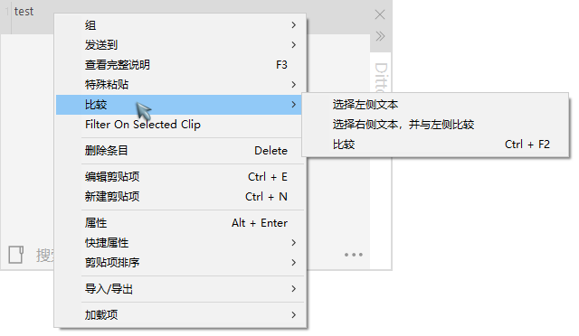
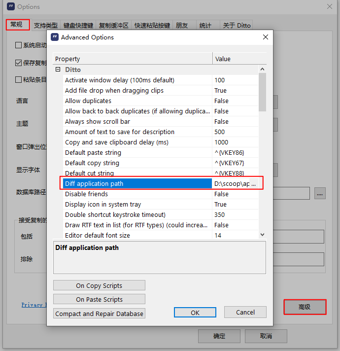

Ditto 可以对比两个剪贴板列表条目的文本差异。
在剪贴板列表中选择要比较的两个条目，通过右键菜单（见下图）设为“左/右侧文本”进行比较。

默认设置下，比较操作将会用浏览器打开 WinMerge 应用的主页。这是因为，比较操作依赖于第三方应用 WinMerge。
要想比较操作正常进行，需要确保已安装 WinMerge，并在【选项-常规-高级】中设置【Diff application path】属性，指定为 WinMerge（WinMergeU.exe）的路径即可。

需要特别注意的是，Ditto 只支持文本比较，如果选择的是非文本条目，将得不到任何响应。